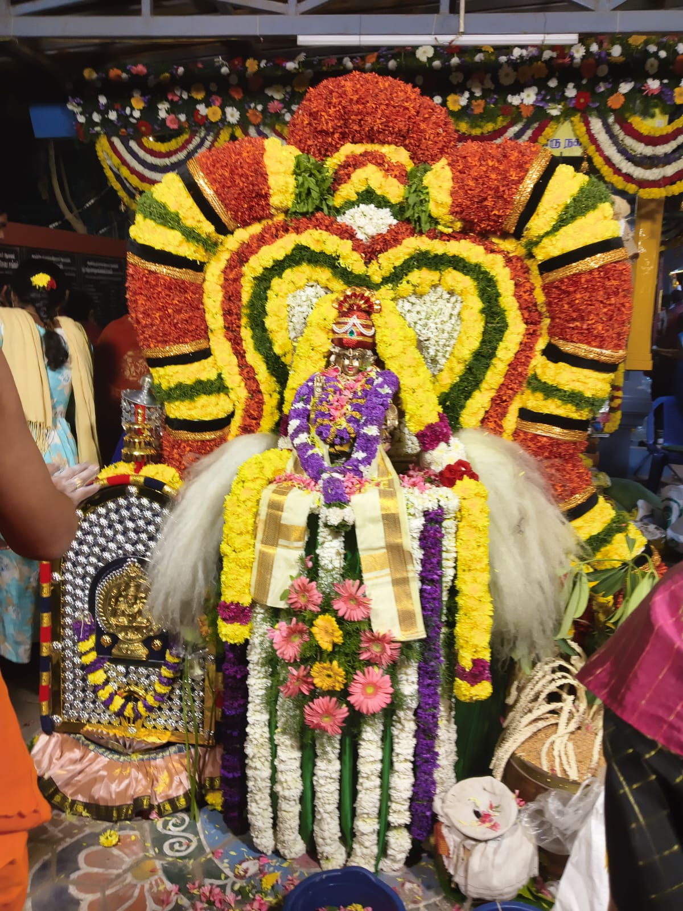
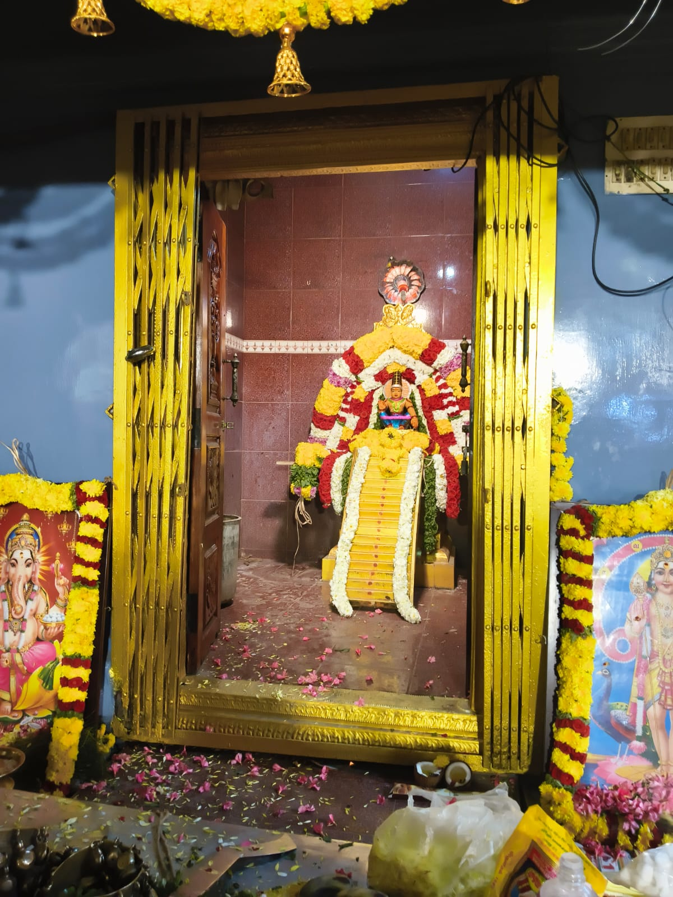
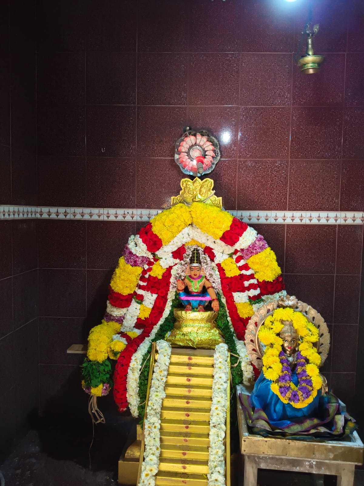
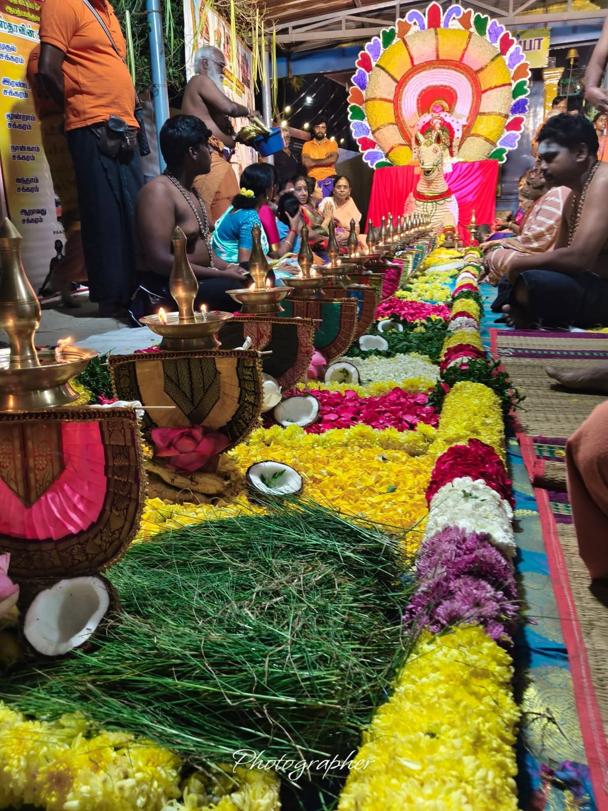

ABASS
Seva & Pooja Gallery
Abhath Bhanthavan Ayyappa Seva Sangham Trust — a sacred photographic archive of Padi Pooja, Vilakku Pooja, Bhajans, Annadhaanam, and spiritual community gatherings.
Divine Archive
Moments of Devotion & Seva
Click any photograph to explore in high resolution with full screen interactive preview and navigation.
18 Padi Pooja

Grand 18 Padi Altar & Deepam Row
Sacred Padi Pooja altar adorned with brass deepams & floral garlands.
18 Padi Pooja

Sri Dharma Sastha Sanctum Sanctorum
Majestic view of Sri Ayyappa Swami sanctum with 18 golden steps.
Thiru Vilakku Pooja

Traditional Thiru Vilakku Pooja
Devout women performing deepam worship with sacred prayers.
Mandala Pooja & Utsavam

Devotees in Sannidhanam Prayer
Gathering of Swamis in shared communion and prayer.
Mandala Pooja & Utsavam

Grand Utsavam Moorthi Alankaram
Divine darshan of Lord Ayyappa with exquisite floral decorations.
18 Padi Pooja

Sacred 18 Steps Floral Radiance
Luminous deepams on every step invoking the 18 divine deities.
Mandala Pooja & Utsavam

Bhajan & Namasankeerthanam
Soul-stirring Ayyappa Sankeerthanam elevating spiritual fervor.
Mandala Pooja & Utsavam

Utsavam Procession & Darshan
Grand procession honoring Lord Manikanta during the annual Utsavam.
18 Padi Pooja

Pushpanjali & Deeparadhana
Divine ritual of lighting deepams and offering sacred mantras.
Annadhaanam

Annadhaanam & Seva Gathering
Dedicated volunteers serving the congregation with heartfelt devotion.
Maha Abhishekam

Maha Abhishekam Darshan
Sacred Abhishekam purifying the environment and blessing all devotees.
Mandala Pooja & Utsavam

Thulasi & Vana Mala Alankaram
Mesmerizing close-up of Lord Manikanta in full ceremonial splendor.
Mandala Pooja & Utsavam

Community Devotional Singing
Harivarasanam chanting uniting hearts in peace and spiritual bliss.
18 Padi Pooja

Seva Planning & Community Meet
Organizing annual pilgrimage support and seva operations.
Padi & Vilakku Pooja

Annual Padi & Vilakku Pooja Notice
Official invitation poster for the grand annual temple celebrations.
Annadhaanam

Grand Congregation & Prasadam
Bounteous Annadhaanam blessed by Swami's grace.